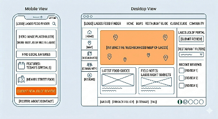

Discover Lagos Food Finder Site Plan
Site Name
Lagos Food Finder
This name helps users easily find local foods and restaurants in Lagos.
Site Purpose
The website provides information about Nigerian foods, restaurants, pricing, and weather updates.
Scenarios
- Where can I find affordable food in Lagos?
- What local dishes should I try?
Color Scheme
Primary: Green (#1f6f4a) - headings, header
Secondary: Orange (#F4A261) - accents and highlights
Typography
Roboto font used for headings and body text.
Wireframes
